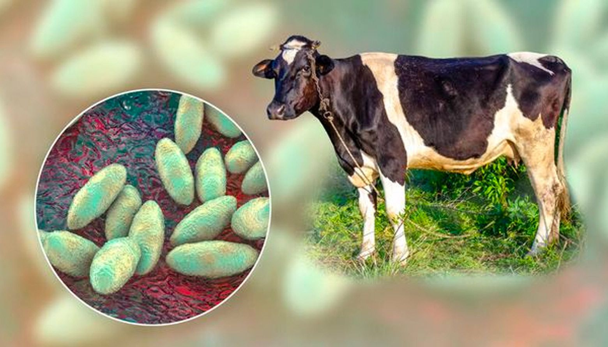

Descripción
La brucelosis es una infección bacteriana causada por el género Brucella. Se transmite principalmente a través del consumo de productos lácteos no pasteurizados o el contacto con animales infectados. La enfermedad puede causar síntomas similares a los de la gripe y puede ser crónica si no se trata adecuadamente.

Causas
La brucelosis es causada por bacterias del género Brucella. Las especies más comunes que afectan a los humanos son Brucella abortus, Brucella melitensis, Brucella suis y Brucella canis. La transmisión ocurre principalmente a través del contacto con animales infectados o el consumo de productos lácteos no pasteurizados.
Síntomas
Los síntomas pueden incluir fiebre intermitente, sudores nocturnos, dolor articular, fatiga, y pérdida de apetito. En casos graves, la brucelosis puede causar complicaciones como infecciones del hígado, bazo, y huesos.
Pruebas y Tratamientos Comunes para la Brucelosis
| Prueba o Tratamiento | Descripción |
|---|---|
| Prueba de Rosa de Bengala | Una prueba de aglutinación rápida utilizada para detectar anticuerpos contra el género Brucella en el suero del paciente. |
| Hemocultivo | Se cultiva sangre del paciente para identificar la presencia de bacterias Brucella, especialmente en las primeras etapas de la enfermedad. |
| Prueba de SAT (Prueba de Aglutinación en Suero) | Una prueba serológica utilizada para medir el nivel de anticuerpos específicos contra Brucella en el suero del paciente. |
| Tratamiento con Doxiciclina | Un antibiótico de amplio espectro que suele ser parte del tratamiento de primera línea para la brucelosis, a menudo combinado con rifampicina. |
| Tratamiento con Rifampicina | Otro antibiótico utilizado en combinación con doxiciclina para tratar la brucelosis, ya que ayuda a reducir el riesgo de recaída. |
Tratamiento
El tratamiento para la brucelosis generalmente incluye una combinación de antibióticos como la doxiciclina y rifampicina durante varias semanas. Es importante seguir el tratamiento completo para prevenir recurrencias o complicaciones.
Expectativas
Con un tratamiento adecuado, la mayoría de los pacientes se recuperan de la brucelosis. Sin embargo, la enfermedad puede ser crónica y causar síntomas persistentes en algunos casos, por lo que es fundamental el seguimiento médico.
Animales Transmisores De Brucelosis
Haz clic en las áreas activas para aprender más sobre los animales que pueden transmitir la Brucelosis.